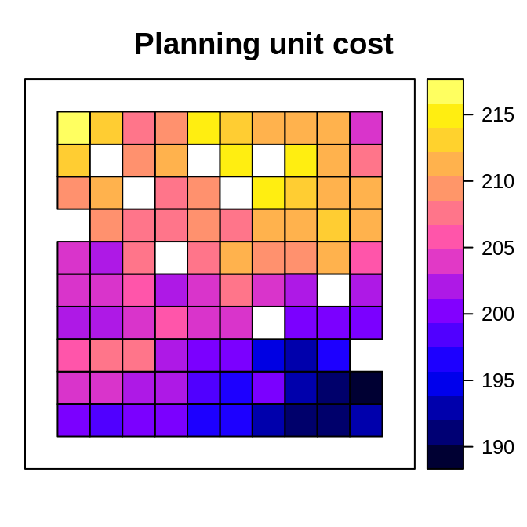
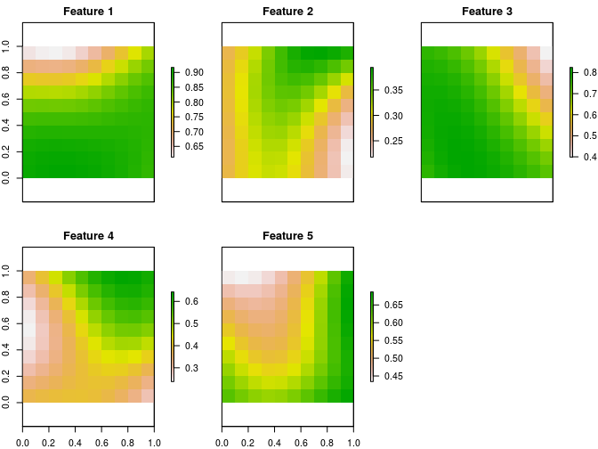
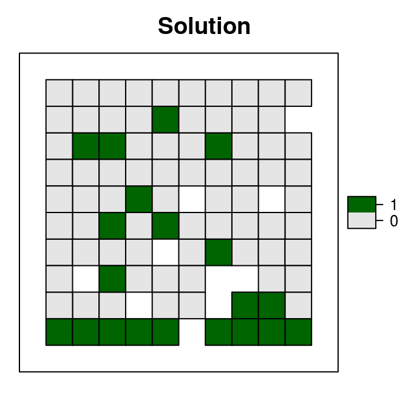
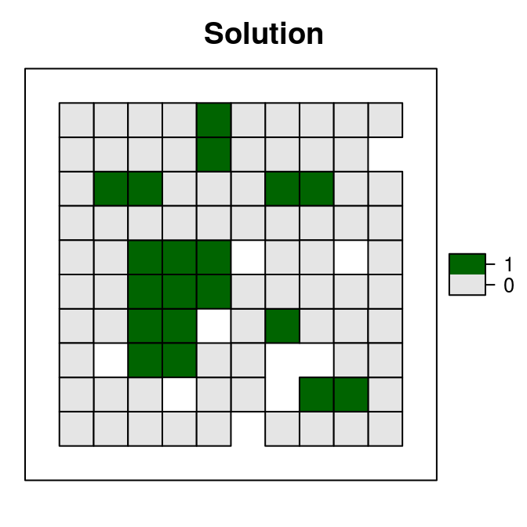
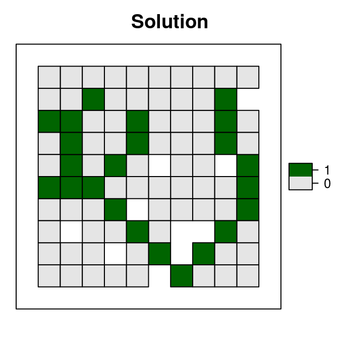

The prioritizr R package uses integer linear programming (ILP) techniques to provide a flexible interface for building and solving conservation planning problems. It supports a broad range of objectives, constraints, and penalties that can be used to custom-tailor conservation planning problems to the specific needs of a conservation planning exercise. Once built, conservation planning problems can be solved using a variety of commercial and open-source exact algorithm solvers. In contrast to the algorithms conventionally used to solve conservation problems, such as heuristics or simulated annealing, the exact algorithms used here are guaranteed to find optimal solutions. Furthermore, conservation problems can be constructed to optimize the spatial allocation of different management actions or zones, meaning that conservation practitioners can identify solutions that benefit multiple stakeholders. Finally, this package has the functionality to read input data formatted for the Marxan conservation planning program, and find much cheaper solutions in a much shorter period of time than Marxan.
Installation
The latest official version of the prioritizr R package can be installed using the following R code.
install.packages("prioritizr", repos = "https://cran.rstudio.com/")Alternatively, the latest development version can be installed using the following code. Please note that while developmental versions may contain additional features not present in the official version, they may also contain coding errors.
if (!require(devtools))
install.packages("devtools")
devtools::install_github("prioritizr/prioritizr")Citation
Please using the following citation to cite the ’prioritizr R package in publications:
Hanson JO, Schuster R, Morrell N, Strimas-Mackey M, Watts ME, Arcese P, Bennett J, Possingham HP (2017). prioritizr: Systematic Conservation Prioritization in R. R package version 4.0.0.0. Available at https://github.com/prioritizr/prioritizr.
Additionally, we keep a record of publications that use the prioritizr R package. If you use this package in any reports or publications, please file an issue on GitHub so we can add it to the record.
Usage
Here we will provide a short example showing how the prioritizr R package can be used to build and solve conservation problems. For brevity, we will use one of the built-in simulated data sets that is distributed with the package. First, we will load the prioritizr R package.
# load package
library(prioritizr)We will use the sim_pu_polygons object to represent our planning units. Although the prioritizr R can support many different types of planning unit data, here our planning units are represented as polygons in a spatial vector format (i.e. SpatialPolygonsDataFrame). Each polygon represents a different planning unit and we have 90 planning units in total. The attribute table associated with this data set contains information describing the acquisition cost of each planning (“cost” column), and a value indicating if the unit is already located in protected area (“locked_in” column). Let’s explore the planning unit data.
# load planning unit data
data(sim_pu_polygons)
# show the first 6 rows in the attribute table
head(sim_pu_polygons@data)## cost locked_in locked_out
## 1 215.8638 FALSE FALSE
## 2 212.7823 FALSE FALSE
## 3 207.4962 FALSE FALSE
## 4 208.9322 FALSE TRUE
## 5 214.0419 FALSE FALSE
## 6 213.7636 FALSE FALSE# plot the planning units and color them according to acquisition cost
spplot(sim_pu_polygons, "cost", main = "Planning unit cost",
xlim = c(-0.1, 1.1), ylim = c(-0.1, 1.1))
# plot the planning units and show which planning units are inside protected
# areas (colored in yellow)
spplot(sim_pu_polygons, "locked_in", main = "Planning units in protected areas",
xlim = c(-0.1, 1.1), ylim = c(-0.1, 1.1))
Conservation features are represented using a stack of raster data (i.e. RasterStack objects). A RasterStack represents a collection of RasterLayers with the same spatial properties (i.e. spatial extent, coordinate system, dimensionality, and resolution). Each RasterLayer in the stack describes the distribution of a conservation feature.
In our example, the sim_features object is a RasterStack object that contains 5 layers. Each RasterLayer describes the distribution of a species. Specifically, the pixel values denote the proportion of suitable habitat across different areas inside the study area. For a given layer, pixels with a value of one are comprised entirely of suitable habitat for the feature, and pixels with a value of zero contain no suitable habitat.
# load feature data
data(sim_features)
# plot the distribution of suitable habitat for each feature
plot(sim_features, main = paste("Feature", seq_len(nlayers(sim_features))),
nr = 2)
Let’s say that we want to develop a reserve network that will secure 20 % of the distribution for each feature in the study area for minimal cost. In this planning scenario, we can either purchase all of the land inside a given planning unit, or none of the land inside a given planning unit. Thus we will create a new problem that will use a minimum set objective (add_min_set_objective), with relative targets of 20 % (add_relative_targets), and binary decisions (add_binary_decisions).
# create problem
p1 <- problem(sim_pu_polygons, features = sim_features,
cost_column = "cost") %>%
add_min_set_objective() %>%
add_relative_targets(0.2) %>%
add_binary_decisions()After we have built a problem, we can solve it to obtain a solution. Since we have not specified the method used to solve the problem, prioritizr will automatically use the best solver currently installed. It is strongly encouraged to install the Gurobi software suite and the gurobi R package to solve problems quickly, for more information on this please refer to the Gurobi Installation Gude
# solve the problem
s1 <- solve(p1)## Optimize a model with 5 rows, 90 columns and 450 nonzeros
## Variable types: 0 continuous, 90 integer (90 binary)
## Coefficient statistics:
## Matrix range [2e-01, 9e-01]
## Objective range [2e+02, 2e+02]
## Bounds range [1e+00, 1e+00]
## RHS range [6e+00, 1e+01]
## Found heuristic solution: objective 4135.2744673
## Presolve time: 0.00s
## Presolved: 5 rows, 90 columns, 450 nonzeros
## Variable types: 0 continuous, 90 integer (90 binary)
## Presolved: 5 rows, 90 columns, 450 nonzeros
##
##
## Root relaxation: objective 3.490348e+03, 17 iterations, 0.00 seconds
##
## Nodes | Current Node | Objective Bounds | Work
## Expl Unexpl | Obj Depth IntInf | Incumbent BestBd Gap | It/Node Time
##
## 0 0 3490.34813 0 4 4135.27447 3490.34813 15.6% - 0s
## H 0 0 3597.0951275 3490.34813 2.97% - 0s
##
## Explored 1 nodes (17 simplex iterations) in 0.00 seconds
## Thread count was 1 (of 4 available processors)
##
## Solution count 2: 3597.1 4135.27
##
## Optimal solution found (tolerance 1.00e-01)
## Best objective 3.597095127479e+03, best bound 3.490348127696e+03, gap 2.9676%# extract the objective (cost of solution in this case)
print(attr(s1, "objective"))## solution_1
## 3597.095# extract time spent solving the problem
print(attr(s1, "runtime"))## solution_1
## 0.001972914# extract state message from the solver
print(attr(s1, "status"))## solution_1
## "OPTIMAL"# plot the solution
s1$solution_1 <- factor(s1$solution_1)
spplot(s1, "solution_1", col.regions = c('grey90', 'darkgreen'),
main = "Solution", xlim = c(-0.1, 1.1), ylim = c(-0.1, 1.1))
Although this solution adequately conserves each feature, it is inefficient because it does not consider the fact some of the planning units are already inside protected areas. Since our planning unit data contains information on which planning units are already inside protected areas (in the "locked_in" column of the attribute table), we can add constraints to ensure they are prioritized in the solution (add_locked_in_constraints).
# create new problem with locked in constraints added to it
p2 <- p1 %>% add_locked_in_constraints("locked_in")
# solve the problem
s2 <- solve(p2)## Optimize a model with 5 rows, 90 columns and 450 nonzeros
## Variable types: 0 continuous, 90 integer (90 binary)
## Coefficient statistics:
## Matrix range [2e-01, 9e-01]
## Objective range [2e+02, 2e+02]
## Bounds range [1e+00, 1e+00]
## RHS range [6e+00, 1e+01]
## Found heuristic solution: objective 4020.2038180
## Presolve removed 0 rows and 10 columns
## Presolve time: 0.00s
## Presolved: 5 rows, 80 columns, 400 nonzeros
## Variable types: 0 continuous, 80 integer (80 binary)
## Presolved: 5 rows, 80 columns, 400 nonzeros
##
##
## Root relaxation: objective 3.620461e+03, 11 iterations, 0.00 seconds
##
## Nodes | Current Node | Objective Bounds | Work
## Expl Unexpl | Obj Depth IntInf | Incumbent BestBd Gap | It/Node Time
##
## 0 0 3620.46082 0 3 4020.20382 3620.46082 9.94% - 0s
##
## Explored 1 nodes (11 simplex iterations) in 0.00 seconds
## Thread count was 1 (of 4 available processors)
##
## Solution count 1: 4020.2
##
## Optimal solution found (tolerance 1.00e-01)
## Best objective 4.020203818008e+03, best bound 3.620460824006e+03, gap 9.9434%# plot the solution
s2$solution_1 <- factor(s2$solution_1)
spplot(s2, "solution_1", col.regions = c('grey90', 'darkgreen'),
main = "Solution", xlim = c(-0.1, 1.1), ylim = c(-0.1, 1.1))
This solution is an improvement over the previous solution. However, it is also highly fragmented. As a consequence, this solution may be associated with increased management costs and the species in this scenario may not benefit substantially from this solution due to edge effects. We can further modify the problem by adding penalties that punish overly fragmented solutions (add_boundary_penalties). Here we will use a penalty factor of 1 (i.e. boundary length modifier; BLM), and an edge factor of 50 % so that planning units that occur outer edge of the study area are not overly penalized.
# create new problem with boundary penalties added to it
p3 <- p2 %>% add_boundary_penalties(penalty = 500, edge_factor = 0.5)
# solve the problem
s3 <- solve(p3)## Optimize a model with 293 rows, 234 columns and 1026 nonzeros
## Variable types: 0 continuous, 234 integer (234 binary)
## Coefficient statistics:
## Matrix range [2e-01, 1e+00]
## Objective range [1e+02, 4e+02]
## Bounds range [1e+00, 1e+00]
## RHS range [6e+00, 1e+01]
## Found heuristic solution: objective 20287.196992
## Found heuristic solution: objective 6732.6427417
## Presolve removed 66 rows and 43 columns
## Presolve time: 0.00s
## Presolved: 227 rows, 191 columns, 844 nonzeros
## Variable types: 0 continuous, 191 integer (191 binary)
## Presolved: 227 rows, 191 columns, 844 nonzeros
##
##
## Root relaxation: objective 5.497074e+03, 115 iterations, 0.00 seconds
##
## Nodes | Current Node | Objective Bounds | Work
## Expl Unexpl | Obj Depth IntInf | Incumbent BestBd Gap | It/Node Time
##
## 0 0 5497.07370 0 120 6732.64274 5497.07370 18.4% - 0s
## H 0 0 6637.1273758 5497.07370 17.2% - 0s
## H 0 0 6477.0668554 5497.07370 15.1% - 0s
## 0 0 5526.00747 0 120 6477.06686 5526.00747 14.7% - 0s
## H 0 0 6395.0674552 5526.00747 13.6% - 0s
## H 0 0 6141.8406623 5526.00747 10.0% - 0s
## 0 0 5526.54004 0 117 6141.84066 5526.54004 10.0% - 0s
## 0 0 5547.68803 0 105 6141.84066 5547.68803 9.67% - 0s
##
## Cutting planes:
## Gomory: 3
##
## Explored 1 nodes (156 simplex iterations) in 0.04 seconds
## Thread count was 1 (of 4 available processors)
##
## Solution count 6: 6141.84 6395.07 6477.07 ... 20287.2
##
## Optimal solution found (tolerance 1.00e-01)
## Best objective 6.141840662274e+03, best bound 5.547688032229e+03, gap 9.6739%# plot the solution
s3$solution_1 <- factor(s3$solution_1)
spplot(s3, "solution_1", col.regions = c('grey90', 'darkgreen'),
main = "Solution", xlim = c(-0.1, 1.1), ylim = c(-0.1, 1.1))
This solution is even better then the previous solution. However, we are not finished yet. This solution does not maintain connectivity between reserves, and so species may have limited capacity to disperse throughout the solution. To avoid this, we can add contiguity constraints (add_contiguity_constraints).
# create new problem with contiguity constraints
p4 <- p3 %>% add_contiguity_constraints()
# solve the problem
s4 <- solve(p4)## Optimize a model with 654 rows, 506 columns and 2292 nonzeros
## Variable types: 0 continuous, 506 integer (506 binary)
## Coefficient statistics:
## Matrix range [2e-01, 1e+00]
## Objective range [1e+02, 4e+02]
## Bounds range [1e+00, 1e+00]
## RHS range [1e+00, 1e+01]
## Presolve removed 282 rows and 210 columns
## Presolve time: 0.01s
## Presolved: 372 rows, 296 columns, 1182 nonzeros
## Variable types: 0 continuous, 296 integer (296 binary)
## Found heuristic solution: objective 9816.9791056
## Found heuristic solution: objective 7879.0795356
## Presolve removed 3 rows and 0 columns
## Presolved: 369 rows, 296 columns, 1176 nonzeros
##
##
## Root relaxation: objective 6.478767e+03, 142 iterations, 0.00 seconds
##
## Nodes | Current Node | Objective Bounds | Work
## Expl Unexpl | Obj Depth IntInf | Incumbent BestBd Gap | It/Node Time
##
## 0 0 6478.76652 0 137 7879.07954 6478.76652 17.8% - 0s
## 0 0 6648.95121 0 121 7879.07954 6648.95121 15.6% - 0s
## H 0 0 7805.4228157 6648.95121 14.8% - 0s
## 0 0 6669.61733 0 114 7805.42282 6669.61733 14.6% - 0s
## 0 0 6860.84535 0 68 7805.42282 6860.84535 12.1% - 0s
## H 0 0 7778.5559284 6860.84535 11.8% - 0s
## 0 0 6867.28876 0 72 7778.55593 6867.28876 11.7% - 0s
## 0 0 6919.42499 0 81 7778.55593 6919.42499 11.0% - 0s
## 0 0 6920.78998 0 84 7778.55593 6920.78998 11.0% - 0s
## 0 0 6945.90514 0 93 7778.55593 6945.90514 10.7% - 0s
## 0 0 6950.97809 0 96 7778.55593 6950.97809 10.6% - 0s
## 0 0 6950.97809 0 96 7778.55593 6950.97809 10.6% - 0s
## 0 0 6952.78730 0 85 7778.55593 6952.78730 10.6% - 0s
## 0 0 6952.78730 0 86 7778.55593 6952.78730 10.6% - 0s
## 0 0 6955.94702 0 92 7778.55593 6955.94702 10.6% - 0s
## 0 0 6955.94702 0 92 7778.55593 6955.94702 10.6% - 0s
## 0 0 6955.94702 0 90 7778.55593 6955.94702 10.6% - 0s
## 0 2 6958.76573 0 90 7778.55593 6958.76573 10.5% - 0s
## * 16 7 4 7758.3060997 6995.60241 9.83% 17.7 0s
##
## Cutting planes:
## Gomory: 4
## MIR: 3
## Zero half: 19
##
## Explored 17 nodes (739 simplex iterations) in 0.10 seconds
## Thread count was 1 (of 4 available processors)
##
## Solution count 5: 7758.31 7778.56 7805.42 ... 9816.98
##
## Optimal solution found (tolerance 1.00e-01)
## Best objective 7.758306099744e+03, best bound 6.995602411029e+03, gap 9.8308%# plot the solution
s4$solution_1 <- factor(s4$solution_1)
spplot(s4, "solution_1", col.regions = c('grey90', 'darkgreen'),
main = "Solution", xlim = c(-0.1, 1.1), ylim = c(-0.1, 1.1))
This short example demonstrates how the prioritizr R package can be used to build a minimal conservation problem, and how constraints and penalties can be iteratively added to the problem to obtain a solution. Although we explored just a few different functions for modifying the a conservation problem, the prioritizr R package provides many functions for specifying objectives, constraints, penalties, and decision variables, so that you can build and custom-tailor a conservation planning problem to suit your exact planning scenario.
Getting help
Please refer to the package website for more information on the prioritizr R package. This website contains a tutorial designed to provide a brief introduction to conservation planning and a comprehensive overview of the package, instructions for installing the Gurobi software suite to solve large-scale and complex conservation planning problems, and a tutorial on building and solving problems that contain multiple management zones. If you have any questions about using the the prioritizr R package or suggestions from improving it, please file an issue on the package’s online code repository.